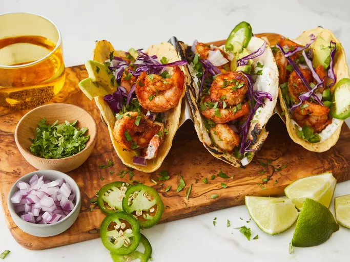

Shrimp Tacos with Cilantro-Lime Crema

Description
Shrimp tacos that bring out all the spicy seasoning through the power of avocado, lime crema and cilantro. Perfect for small gatherings amongst family and friends
The process is quite straightforward to follow but well rewarding once you see the final results. Highly advised being patient and taking good care with following the steps.
Ingredients
- 2 pounds large frozen peeled and deveined shrimp, thawed
- 1 ½ teaspoons chili powder
- 1 teaspoon freshly minced garlic
- ½ teaspoon paprika
- ½ teaspoon ground cumin
teaspoon onion powder
- ½ teaspoon salt
- ½ teaspoon ground black pepper
- ¼ teaspoon ground coriander
- ¼ teaspoon grated Valencia orange zest
- 2 tablespoons olive oil, or more as needed
- 2 tablespoons sour cream
- 1 lime, zested and juiced
- 1 teaspoon chopped fresh cilantro
- ¼ teaspoon garlic powder
- 1 pinch salt and ground black pepper
- 20 (6 inch) corn tortillas
- 2 avocados, thinly sliced, or to taste
- 1 red onion, finely diced, or to taste
- ½ bunch fresh cilantro, chopped, or to taste
- 1 jalapeño pepper, diced, or to taste (Optional)
- 2 limes, cut into wedges, or as needed